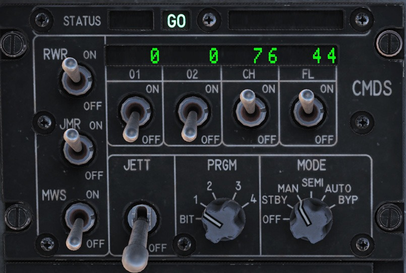

対抗手段#
Countermeasures Dispensing Set (CMDS): 対抗手段放出セット#
チャフやフレアなどの対抗手段 (= Countermeasures) の選択と放出は, コックピットパネル, HOTAS コントロール, DED から行える.
CMDS 制御パネル#
CMDS パネルは左補助コンソールにある. このシステムは追跡レーダー, 空対空ミサイルや地対空ミサイルから航空機を防御する. 防御はチャフかフレアの放出によって行われる.


- STATUS ディスプレイ: 左のディスプレイに CMDS の状態を GO か NO GO で表示する. SEMI または AUTO モードでカウンターメジャーを放出するのに手動操作が必要な場合は右のディスプレイに DISPENSE READY が表示される.
- RWR/JMR ソーススイッチ: これらは RWR や ECM ジャマーの電源ではない. SEMI または AUTO モードでカウンターメジャーを放出するときに RWR や ECM のデータを利用するために使う.
- MWS スイッチ: このミサイル警報装置はブロック 50 バイパーには搭載されていない.
- JETT スイッチ: JETT にするとカウンターメジャーを投棄する.このスイッチは CMDS の電源がオフになっていても機能する.
- Quantity Indications: それぞれの種類のカウンターメジャーの残量を表示する.DED で設定した残量レベル (BINGO) になると LO と表示される.システムが故障した際のメッセージも表示される.
- CH/FL スイッチ: チャフとフレアの放出を有効化する.
- PRGM ノブ: 操縦桿の CMS を前に倒したときに放出される4つの事前設定プログラムの1つを選択する.
- MODE ノブ: CMS の動作モードを選択する.
- MAN: 操縦桿の CMS 前を押すと選択した事前設定プログラムを放出する.
- SEMI: 航空機のシステムが脅威に応じた放出プログラムを選択する. 操縦桿の CMS を後ろに倒して放出する.
- AUTO: 航空機のシステムが脅威に応じた放出プログラムを選択し, 放出も自動で行われる. 操縦桿の CMS を後ろに倒すことでも放出できる. CMS 右を押すと放出を中断する.
- BYPASS: 故障により他のモードが機能しないときに, カウンターメジャーを手動で放出できるようにする.
HOTAS#
操縦桿にはカウンターメジャーを制御する4方向スイッチがある.
- 中立: 何も放出されない OFF ポジションである.
- 前: CMDS パネルの PRGM ノブで選択した事前設定プログラムを放出する.
- 後: MODE ノブで SEMI を選択したときに選択したプログラムを放出する. MODE ノブが AUTO の場合, AUTO モードを有効化する.
- 左: 機能なし
- 右: AUTO モードを無効化する.
CMDS DED ページ#
UFC で CMDS にアクセスするには, ICP の LIST ページで 7 を押す. DCS スイッチを右に倒して SEQ にするとページを切り替えられる.

CH (チャフ) と FL (フレア) の BINGO 残量 (CMDS に LO と警告される下限残量) は最初のページに表示される. BINGO を変更するには CMDS モードノブを STBY にしてから, それぞれの入力欄で数字キーを押す.

このページでは3つの音声メッセージのオンオフを切り替えることもできる.
- フィードバック (FDBK): カウンターメジャープログラムの放出と同時に再生される "チャフフレア" 音声を有効/無効にする.
- リクエストカウンターメジャー (REQCTR): SEMI または AUTO モードでカウンターメジャーが放出されたときに再生される "カウンター" 音声を有効/無効にする.
- ビンゴ (BINGO): カウンターメジャーが BINGO 量に達したときに再生される "ロー" と, 無くなったときに再生される "アウト" 音声を有効/無効にする.
DED の 2ページ目には, 放出するそれぞれのカウンターメジャーの量と間隔が表示される. 数値を直接入力することでこれらを変更できる. DED ページでカウンターメジャーのプログラムを変更するときは, CMDS モードでノブを STBY にする.
選択中のプログラムはページ右上に表示される. ICP のインクリメント/デクリメントスイッチを押すと, 5つのプログラムが順番に切り替わる. チャフとフレアのページの表記は同じである.
- Burst Quantity (バースト量): 1バースト (= 1組) あたりのカウンターメジャー放出量である.
- Burst Interval (バースト間隔): 1バースト中に放出するカウンターメジャーの秒間隔である.通常は非常に小さい数値である.
- Salvo Quantity (複数バースト放出量): 1回あたりに放出するバースト量である.
- Salvo Interval (複数バースト放出間隔): 1回あたりに放出するバーストの秒間隔である.
例として, 上図では2つのフレアの組が1秒ごとに10秒間, 合計で20発放出される.
最終更新日: